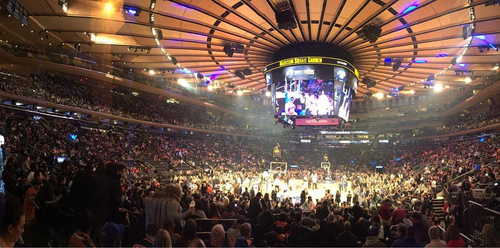

$4,800 to Watch From the Rafters

NBA Finals tickets at MSG tonight. Nosebleeds: $4,800. Lower level: $8,000-$25,000. Courtside: $100,000+.
These are Knicks fans. People who've waited 53 years for this moment. The market just priced them out of the building.
Josh Hart said it best -- "$7K, $8K is ridiculous. A lot of people who have been waiting for this moment for a very long time, unfortunately, aren't able to get into the building." Adam Silver called the situation "frustrating." Frustrating is not a policy.
This is what happens when Ticketmaster controls primary distribution, and the secondary market runs wild on StubHub. Championship tickets become a financial instrument. The people dropping $100,000 courtside are not the ones who suffered through the Isiah Thomas era. They are the ones who can afford it.
Sports. Music. Live events. The same story plays out every time. Ticketmaster and StubHub extract maximum value from the moment fans have waited years for. The platforms win. The fans lose.
The NBA needs to act. No resale above face value. Verified fan presales with purchase limits. Real accountability for platforms that have spent decades profiting from pricing loyal fans into their living rooms.
Live sports and live music are two of the last genuinely communal experiences left. Price out the community, and you lose its soul.
The Knicks are two wins away from their first title since 1973. Their fans deserve to be there.